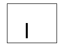

In each of the exercises you generate data in a quick experiment and then explore whether a given model can account for your data. The experiments take 10 minutes or less, and the modeling is done entirely with pencil and paper (and maybe a calculator in a few spots). Each exercise is linked to summaries of results from a large number of people, along with summaries of how well the models can fit these average data.
Template
similarity. Many things in the world look similar, yet we
treat them very differently. On the other hand, if we treated
differently everything that looks slightly different, then we could
never generalize from what we've learned to any novel situation. In
the linked experiment, you rate the similarities of letter-like
patterns, and then examine whether a simple template model can account
for your similarity ratings.

Category
learning. You learn to categorize simple geometric shapes
like the one shown here. Then you are shown new shapes, and must
decide how best to categorize them based on what you learned
before. You then test whether the data can be fit by three different
types of model: Exemplar, prototype or rule.
Blocking of associative
learning. In the experiment, you learn which symptoms
indicate which (fictitious) diseases. You then are given new
combinations of symptoms and asked to give your best diagnosis based
on what you learned before. You then explore the predictions of a
simple connectionist model to test whether is can match your behavior.
Additive
integration of personality traits. When deciding whether
or not to continue a relationship with a new acquaintance, we assess
the various aspects of their personalities. If a person is funny but
overbearing, how likable is she? If a person is kind but dull, how
likable is he? In this exercise, you rate the likabilities of
fictitious people with two personality traits, and then examine
whether a simple additive model can account for your ratings.